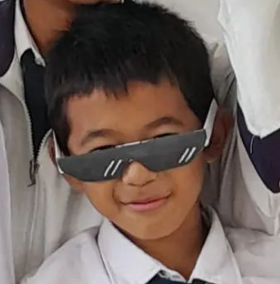

About
ー personality ー

I'm Fajer Ibrahim
And I'm A Next Game Developer
Hallo nama saya Fajer. Saya tinggal di keluarga yang sederhana. Sejak kelas 8 smp saya mulai tertarik dengan dunia percodingan. Saya pun mulai dengan belajar bahasa pemrograman tapi pada akhirnya saya tertarik belajar programing . Dan akhirnya saya pun sekolah di SMK Wikrama Bogor untuk belajar ngoding dan memulai karir saya di dunia programing
Skill
ー my dream ー
Saya memiliki beberapa keahlian di bidang pemrograman, di antaranya adalah HTML, CSS, JavaScript, dan C++. Untuk mempelajari teknologi web seperti HTML, CSS, dan JavaScript, saya mengikuti kursus online yang diselenggarakan oleh Dicoding, sebuah platform pembelajaran digital yang fokus pada pengembangan keterampilan teknologi. Sementara itu, untuk mempelajari bahasa pemrograman C++, saya memanfaatkan sumber daya dari internet, seperti menonton video pembelajaran di kanal YouTube Kelas Terbuka dan membaca tutorial yang tersedia di situs W3Schools. Dengan kombinasi sumber belajar ini, saya berhasil mengembangkan pemahaman yang baik terhadap berbagai bahasa pemrograman dan mampu menerapkannya dalam proyek-proyek yang saya kerjakan.
Certificate
ー so far ー

Project
ー bahaya merokok ー
Tujuan
- Mengetahui data peserta didik SMK Wikrama/Warga sekitar yang merokok.
- Melakukan sosialisasi pencegahan merokok dan bahaya merokok.
- Mengetahui dampak langsung merokok terhadap kesehatan dan lingkungan sekitar.
Hasil Observasi Awal
Hasil observasi menunjukkan bahwa masih banyak warga yang merokok dan sebagian besar perokok mengeluhkan masalah pernapasan seperti batuk dan sesak napas. Selain itu, banyak ditemukan sampah puntung rokok berserakan di lingkungan sekitar, yang dapat mencemari tanah dan air.
Pembahasan
Temuan ini menunjukkan bahwa merokok dapat menyebabkan berbagai penyakit seperti paru-paru, jantung, dan kanker. Sampah puntung rokok juga mengandung zat berbahaya yang dapat merusak lingkungan. Asap yang dihasilkan rokok bisa merugikan warga yang menghisap asap rokok.
Analisis Data
- Merokok: 90% responden merokok.
- Usia Merokok: Mayoritas mulai merokok pada usia 15-20 tahun.
- Respon Berhenti Merokok: 70% tidak peduli.
- Alasan Merokok: 60% kecanduan nikotin.
- Gangguan Asap Rokok: Mayoritas merasa terganggu.
- Solusi: Kampanye anti-rokok, pemisahan tempat merokok.
Tindakan Pencegahan
- Berhenti merokok.
- Menghindari tempat-tempat merokok.
- Peringatan tentang bahayanya.
- Gunakan teknik relaksasi alternatif.
- Buatlah lingkungan bebas rokok.
- Perhatikan kesehatan kita.
- Cari dukungan dari ahli kesehatan kita.
- Pahami risiko paparan pasif.
Hasil Pengamatan
Seperti yang saya amati di sekitar, masih banyak orang yang cuek dan acuh terhadap bahaya dari rokok ini, baik bahaya bagi dirinya sendiri ataupun bahaya untuk orang-orang di sekitarnya. Bagi orang yang merokok mungkin tidak terlalu merasakan efek dari perbuatannya, tapi mungkin bagi orang-orang di sekitarnya itu bisa sangat mengganggu.